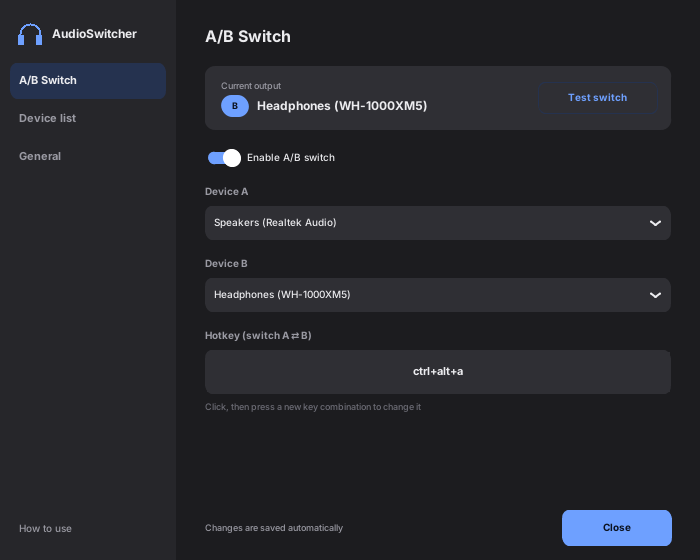
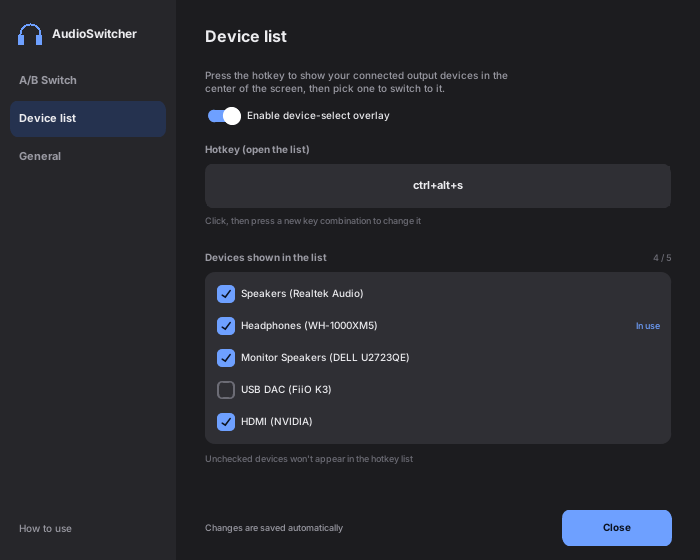
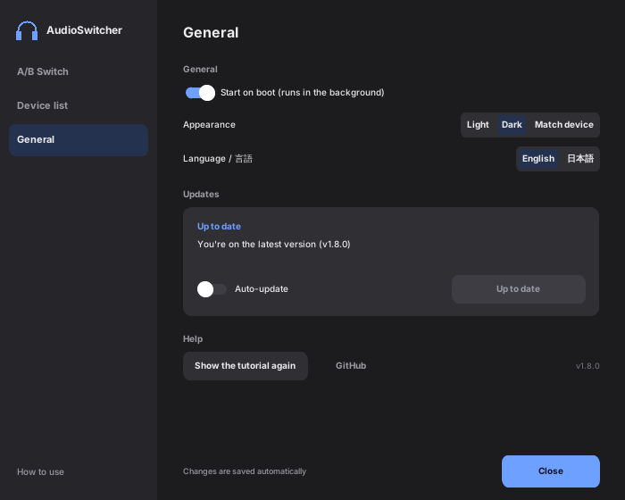
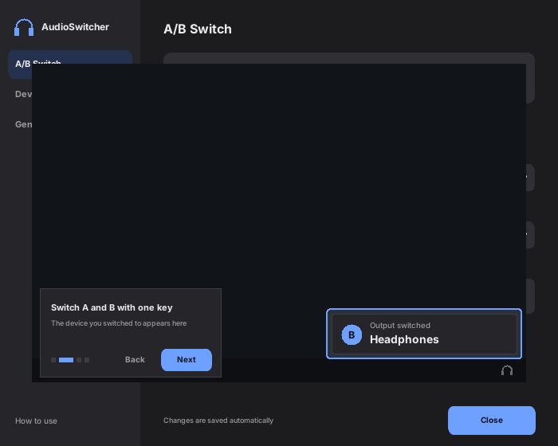

AudioSwitcher runs quietly in the background and switches your sound between speakers, a headset, an external DAC or any other output with a single global hotkey. No more opening the sound settings in the middle of a game or a call.
The window has a menu on the left with three pages: Switch, Device list and General. On the Switch page you pick two devices and a hotkey, and one press toggles between them. Your changes are saved automatically.

Press the Device list hotkey and a list of your connected outputs appears in the middle of the screen. Choose one to switch to it. You decide which devices appear in the list.

On the General page, choose a light or dark theme, or follow your device, pick English or Japanese, and turn on starting with Windows. It also shows your version and checks for updates.

When you switch, a small card appears in the bottom-right corner with a headphone or speaker icon and the name of the new device, then fades away. It shows which device is active without covering your work, and also lets you know when an update is ready to install.

Click the ? button and the app walks you through each step with numbered captions, highlights and click animations. You can also open it from the General page.
Windows often mixes up audio devices that share a product name. AudioSwitcher identifies each one by its unique ID from the Windows Core Audio API (via pycaw), so it always switches to the right device.
Turn on startup on the General page and AudioSwitcher adds itself to the Windows startup folder. It works whether you run the Python script or the single .exe, so it's ready in the background every time you sign in.
Choose the display language under Language on the General page. The window switches instantly and keeps anything you haven't saved yet. English is the default.
What's included
AudioSwitcher-Setup-v1.8.2.exe— The installer for the entire app, including device control.SHA256SUMS— The checksum of the installer, so you can verify your download.
AudioSwitcher isn't code-signed, so Windows may show a SmartScreen warning the first time you run it. Download and run it at your own risk. The full source code is on GitHub if you'd like to check it first.